札幌から電車で約40分。近代的な札幌駅と違い、小樽駅はレトロな風景が広がる。
かつて「北のウォール街」と呼ばれたほど大繁栄した小樽。新しい1万円札の顔であり、500の会社を設立したと言われる渋沢栄一も、この街の経済発展に大きく関わった歴史を持っている。
彼らが活躍した時代に建てられた重厚な石造りの銀行や倉庫群は、現在もそのまま残されており、観光に来たなあって感じで歴史を感じる映えスポット。
歴史ある運河をクルーズしたり、海鮮やスイーツを楽しんだり、ガラス細工やオルゴールのお店を見て回るのも結構楽しい。美術館が5つも密集する場所があるのでそこに行ってみるのもいいかもしれない。
食べて良し、歩いて良しの観光地は時間が足りないくらい予定を詰め込んでいいと思う
ここに紹介する所以外にもいい所はきっとあるので自分で調べると良い。
（※ 値段はもしかしたら間違ってるかもだから自分でちゃんと調べてね）
旧国鉄手宮線オープンスペース
小樽駅から運河の方に向かうと途中にある北海道最古の鉄道廃線跡の散策路。
小樽の歴史を感じながらテクテク歩いてスタンドバイミーごっこでもするといいと思う。無料で散歩できるスポット。
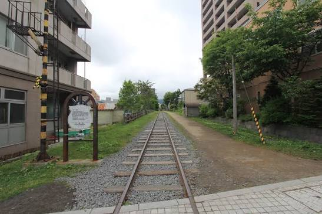
小樽三角市場
昭和23年頃に小樽駅前で7~8軒の露天商が営業したことから始まった小樽三角市場。JR小樽駅から徒歩1~2分なので駅からめっちゃ近い。
全長約200メートル程度の坂道の通路に海鮮や食堂が並ぶ。ちょっとお金出してもいいから海鮮丼食べたいという人はココかなって感じ。
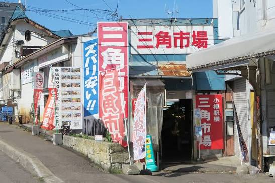
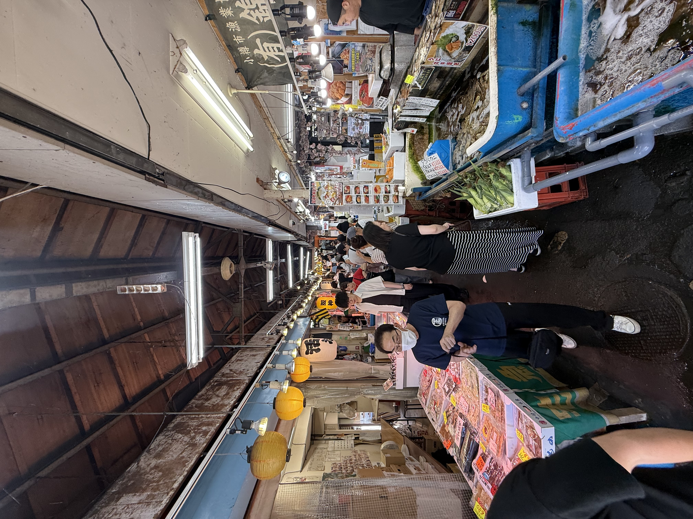
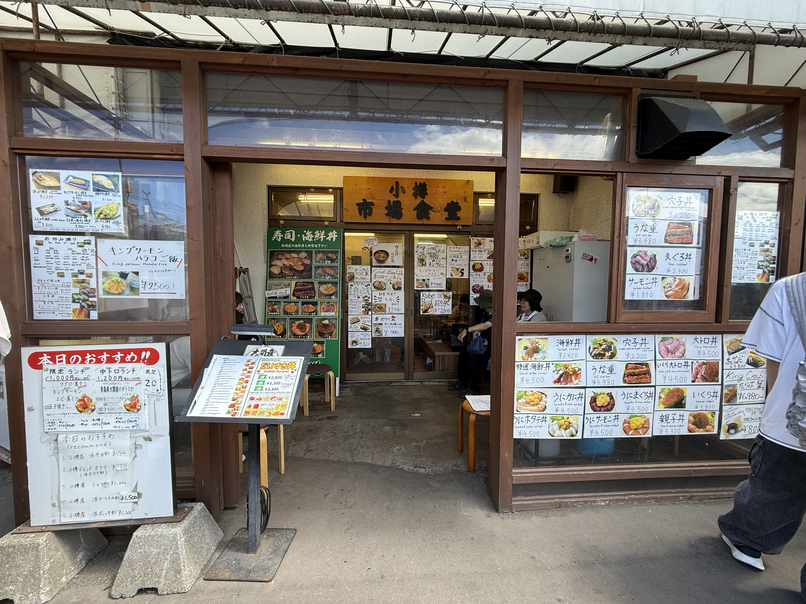
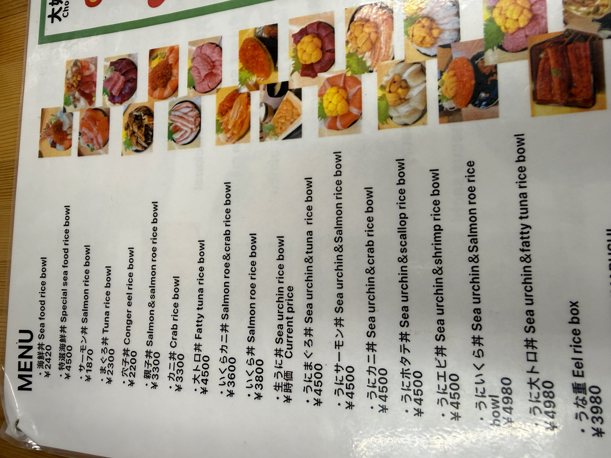

小樽運河クルーズ
1800円小樽運河を船に乗って案内してくれる約40位の船の旅。これはマジでお勧めしたい。風が無くて天気が良ければ海に出るコースを取ってくれる。もう正直これだけでもいいって位の気持ち良さ。あとこの町の歴史の事を話してくれるんだけど、それだけで結構満足できる。
真っ先に券売所に行って、乗りたい時間のチケットを買い、待ち時間で散歩するのがおすすめ。これはマスト。
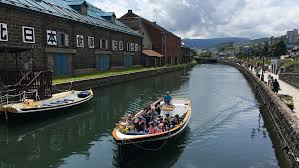
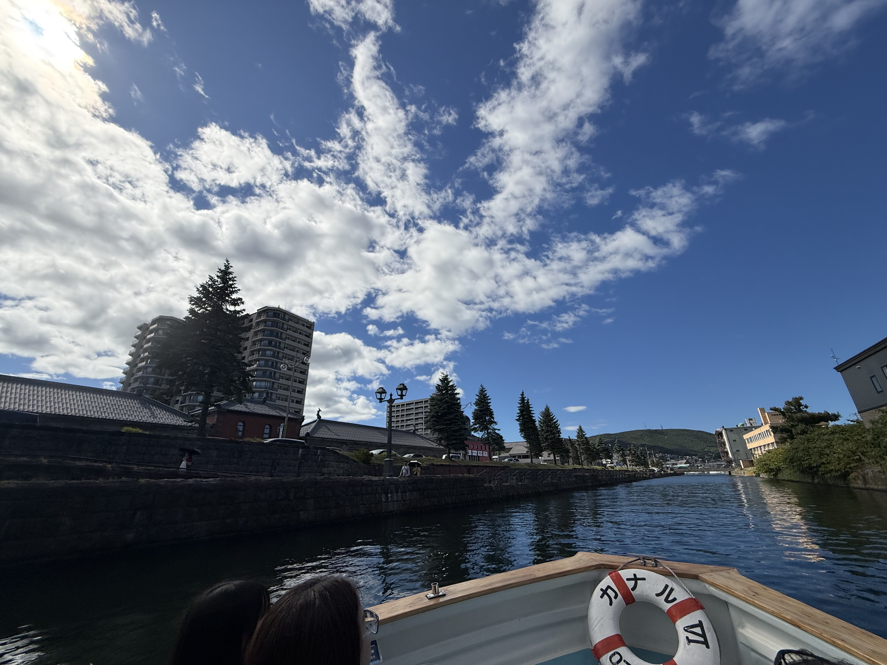
金融資料館
入館無料日本銀行旧小樽支店金融資料館。無料の広報・展示施設。東京駅など手掛けた人が建てた歴史的建築物。日本銀行の業務や北のウォール街と呼ばれた小樽の発展の歴史、一億円の重さ体験などを紹介している。無料だし、堺町通り商店街に行く途中で寄れるのでよってもいいかも。
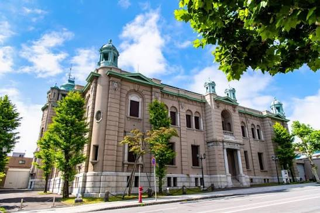
小樽芸術村
ステンドグラス美術館 高校生 700円小樽市が経済都市として栄えた20世紀初頭の歴史的建造物を活用してなんと5つの美術館を隣接させた区画。それが小樽芸術村。この複合ミュージアムはあのニトリホールディングスが手掛けている。ステンドグラスや国内外の優れた美術・工芸品を展示し、歴史的空間と芸術が調和するスポット。さすがにお値段以上過ぎるだろ。
全部は回れないと思うのでどれか1つ興味のあるものに行ってみるのがイイかも。周りを歩くだけでも割と楽しめる。でもやっぱ、小樽にきたならステンドグラスじゃね？
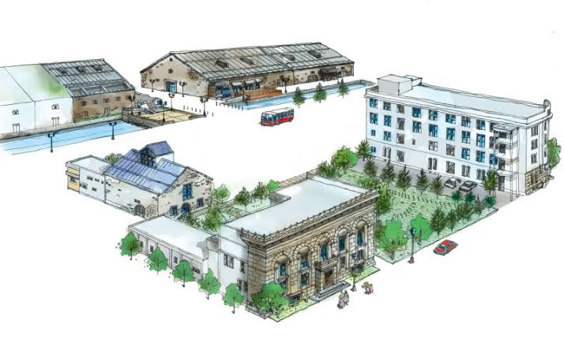
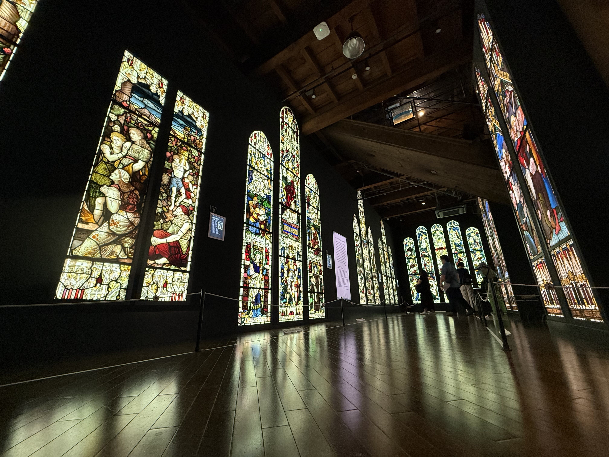

小樽堺町通り商店街
小樽堺町通り商店街は小樽運河から徒歩約5分にある観光のメインストリート。
約1.3kmの通りにレトロな歴史的建造物を活かした100軒以上の店が並び、ガラス細工、オルゴール、有名スイーツ、海鮮グルメを楽しめる。
三角市場が混んでたら、いっそのことこっちで海鮮を楽しむのもあり。“一口海鮮”みたいなのもあったので、海鮮丼は流石に高すぎるけど少しだけ海鮮を楽しみたいって人はそれでもいいかも。
この通りを抜けるとオルゴール堂があるので、そこを目指して歩いてもよし。
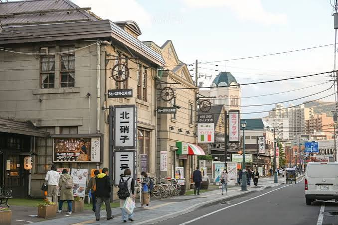